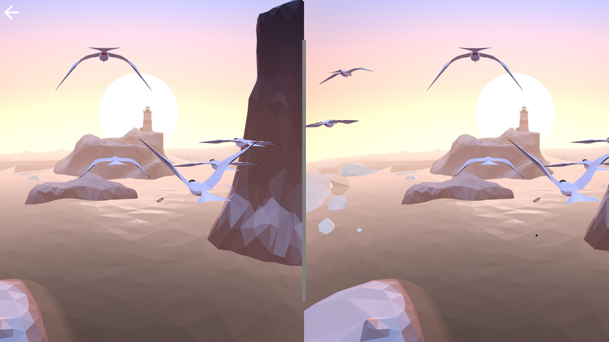

The first animation came to the web via the graphics interchange format or GIF—pronounced ‘Jif,' according to Steve Wilhite who helped develop the format for CompuServe in 1987. Later that year, CompuServe released an enhanced version of the GIF format that allowed for the creation of compressed animations using time delays (Alfonso, 2012).
The GIF format remained proprietary until CompuServe was acquired in 1998 by AOL. The internet service provider allowed the GIF patents to expire, and, in the public domain, tech-savvy artists like Olia Lialina began experimenting with animation (Alfonso, 2012). Her first web-art series "My Boyfriend came back from the war" incorporated GIFs. Lialina, who is considered a historian on use of the GIF format, lists Chuck Poynter as an interesting an influential GIF artist. Poynter, after retiring from the Air Force, began creating GIFs in the late 1990s. He continued until his death in 2001, leaving behind a large library of animated illustrations, including "Dancing Girl," which is considered a classic of the 1990s GIF era. During this time, GIFs were also being used as an adornment to websites, providing banners that glittered or provided some other motion (Alfonso, 2012).
If audio was present on a webpage or accompanied a GIF, it was transmitted using a protocol known as Musical Instrument Digital Interface (MIDI). The amount of data in a MIDI file (a few hundred kilobytes at most) is minuscule by today's standards (Lendino, 2013). But this is what made it possible to provide audio to websites or online games over dialup connections. MIDI often evokes the tinny sounds of the early days of the web, and there is an enduring misconception that MIDI itself was responsible for poor audio quality. However, MIDI's bad reputation is unwarranted, according to Jamie Lendino who asserts poor audio was due to weak instrument sets built into Apple and Windows media players (2013).
MIDI was first unveiled in 1983 and is perceived by many today as archaic. The popular belief that MIDI has been cast aside in favor of newer digital audio formats, such as mp3, is a great example of the problem with what Christina Hass (1999) calls the straightforward progress model. This model wrongly assumes, "a new-is-better view in which new technologies are more advanced and therefore more efficient, more powerful, or both" (p. 210)¬. Most computer browsers no longer support MIDI, but it remains a very useful technology for musicians. In fact, "MIDI permeates the entire music industry … It makes possible the latest, amazing sounding virtual instruments" (Lendino, 2013). MIDI will never be used on the Web in the same way it once was, but the technology remains important for music producers because it is the only open-source language that delivers information to digital instruments about the length, duration, and emphasis of a note.
The GIF has experienced a resurgence in popularity as a format for creating Internet memes. These are often short video clips converted into GIFs that express a concept. Easy-to-use applications, such as GIPHY, allow anyone to generate a GIF from a series of images or a video clip. These applications allow users to overlay text on a GIF, which often serves to make the concept of the Internet meme more explicit. GIFs are also included in text libraries of social-media apps like Facebook messenger. These GIFs are often animated emoticons or popular memes, which allow users to express a wider range of thought or emotion than with static images.
The Rise and Fall of Plugins
As bandwidth increased in the early 2000s, GIF and MIDI were replaced by real video and audio. But watching video required a media-player plugin—a software component that serves mainly to interpret different video formats and apply the familiar media player functionality, such as play, pause, volume, and full screen. These proprietary software plugins, such as Microsoft Silverlight, Windows Media Player, QuickTime Player, and Adobe Flash Player "battled it out until one emerged as the victor in 2005: Adobe Flash" (Bruce Lawson, 2010).
The dominance of Adobe Flash was directly related to the advent of YouTube, and the platform's decision to use Adobe's Flash Player plugin. By June 2006, less than a year after YouTube appeared online, more than 2 billion videos were being watched on the video-sharing site monthly, and more than 65,000 videos were being uploaded daily. (Reuters Limited, 2006).
The other plugins didn't disappear. Microsoft Silverlight, for example, is still used by Netflix for streaming video, but the company offers an HTML5 player because Microsoft's support for Silverlight will cease in mid-October of 2021 (Kh-MSFT, 2016). Adobe announced that it will stop updating and distributing the Flash Player by the end of 2020 (Adobe Corporate Communications, 2017). In 2016, Apple stopped developing QuickTime for Windows, which created some major security problems for PC users who used the media player plugin (Hruska, 2016).
The first YouTube video, uploaded April 23, 2005, starred cofounder Jawed Karim at the San Diego Zoo.
Security problems have long plagued media-player plugins, and these vulnerabilities helped build the case for an open video standard. The final fate of media-player plugins was cast in 2010 when Steve Jobs announced that Apple devices (smartphones and tablets) would not support Flash. Jobs had six reasons for this: Creating in Flash requires expensive proprietary software; more modern video formats were available; Flash had one of the worst security records in 2009; the Flash video decoder drains battery life at about twice the rate of videos in other formats; and Flash was designed for mice and desktop computers, not tablet and smartphone touchscreens. (Jobs, 2010). The sixth, and most important reason, according to Jobs (2010) was that when a third party comes between a developer and a product, it results in sub-standard applications. "We cannot be at the mercy of a third party deciding if and when they will make enhancements available to our developers," (Jobs, 2010).
According to the interactionist definition that Bijker adopted, power is the "[T]ransformative capacity to harness the agency of others to comply with one's ends" (Haas, 1999, p. 224). And, as Haas (1999) points out, "At a macro level, technologies and artifacts help to fix or reify certain structures, and can therefore be instruments of power; this is what Bijker called the semiotic aspect of power" (p. 224). Looking at the demise of Flash to open source standards, it was nothing short of a clash of tech titans, with the victor (in this case Apple) determining the future of everything from how YouTube videos play to how buttons on a smartphone work.
A Period of Transition
Jobs closed his famous 2010 address with a rebuke, "New open standards created in the mobile era, such as HTML5, will win on mobile devices (and PCs too). Perhaps Adobe should focus more on creating great HTML5 tools for the future, and less on criticizing Apple for leaving the past behind."
Adobe began investing in HTML5 in 2010, but the tech giant's official announcement that it would phase out Flash happened only recently (Barrett, 2017). "[A]s open standards like HTML5, WebGL and WebAssembly have matured over the past several years, most now provide many of the capabilities and functionalities that plugins pioneered and have become a viable alternative for content on the web" (Adobe Corporate Communications, 2017). "Given this progress, and in collaboration with several of our technology partners including Apple, Facebook, Google, Microsoft and Mozilla—Adobe is planning to [discontinue] Flash."
Image of an Adobe Flash notification telling user a plugin is needed.
For most users this went largely unnoticed. Apple iOS devices haven't supported the Flash Player plugin since 2010, and Android followed suit two years later. YouTube, a decade after the platform helped make the Flash Player plugin nearly ubiquitous, announced that it would default to HTML5 for its video playback (Google, 2015).
The shift away from Flash was easy for video creators, but creators of browser-based games and interactive educational modules have been significantly affected. The authoring tools provided by Adobe Flash were easy to use, which created a low bar for entry into developing interactive content. Proponent Ian Lobb explains, "Flash allowed me to ease myself into being a game developer without having to understand computer science principals off the bat" (Klepek, 2015). Lobb, who has been building Flash games since 2000, is resigned to the fact that Flash is going away. His concern now is that when browsers finally do away with the Flash Player plugin for good, it will be difficult to preserve or even access the legacy of 20 years of work by developers who used Flash (Klepek, 2015).
HTML5 <video> History and Hurdles
YouTube and other video sharing sites quickly looked for open-source alternatives for video playback. Today most of these sites use HTML5 video, but it wasn't a smooth transition. YouTube launched a beta HTML5 video playback in 2010, and things get a little complicated here. I still have some research to do on how the different video codecs and browsers presented challenges for many sites to quickly pivot to HTML5. I'm still lacking resources in this area of research, so if any of you have a resource that offers a good explanation of codecs in particular, please let me know.
Håkon Wium Lie, creator of CSS and chief technical officer with the Opera Software company, was an early and high-profile proponent of HTML video. Lie penned a manifesto in 2007 that declared, "It's time to make video a first-class citizen of the web. We, the users, have video cameras in our pockets and the bandwidth to transfer more clips and streams than we can watch. What's missing is an easy way to integrate video into web pages, and native support for video in browsers. We, the web community, should address this by adding a video element to HTML. In addition to giving video an HTML element, we must also agree on a baseline video format that will be universally supported, just like the GIF, JPEG and PNG image format are universally supported. It's important that the video format we choose can be supported by a wide range of devices and that it's royalty-free (RF). RF is a well-establish principle for W3C standards."
Standing in the way of this vision was disagreement, software copyrights, and a proliferation of video formats known as codecs—a small piece of software that allows the playback of video or audio in a certain format. In 2007 Opera proposed the codec Ogg Theora as an open format that could facilitate HTML video, but ultimately, all the most popular browsers (Chrome, Safari, Firefox, and Internet Explorer) would need to adopt the codec. Common codecs for video include Ogg Theora, VP8, WebM, and H.264. Of these, H.264 was, and remains, the most widely used codec. However, until October 2013, it was proprietary with licensing royalties being paid to tech giant Cisco.
From the standpoint of the W3C, video could not become a full-fledged member of HTML until an open-source codec was supported by all the major browsers. Even though H.264 was proprietary and unlikely to be accepted by the W3C, its widespread use made it the most likely codec to facilitate the <video> tag. Google's 2011 decision to remove H.264 support from its Chrome browser was met with swift criticism.
This .mp4 video is stored in a local folder and embeded using the html video tag. The <video> tag was one of the most significant features of HTML5 when it was published in 2014.
"The promise of HTML5's <video> tag was a simple one: to allow web pages to contain embedded video without the need for plugins" (Bright, 2011). "With the decision to remove support for the widespread H.264 codec from future versions of Chrome, Google has undermined this widely-anticipated feature."
A certain hopelessness ensued until Oct. 30, 2013, when Cisco, under the banner of collaboration, announced that it was moving the H.264 codec to open source. In answering for what seemed a magnanimous gesture, Rowan Trollepe, Cisco's senior vice president, acknowledged the largest hurdle to an HTML <video> tag was a standardized codec (Trollope, 2013). The move, Trollope said, complimented Cisco's mission to "Create rich collaboration technologies that are incredibly easy to use and make technology available to everyone in the world—from the largest companies to the smallest businesses" (Trollope, 2013).
On Oct. 28, 2014, two days shy of the one-year anniversary of Cisco's H.264 announcement, the W3C officially recommended the adoption of the HTML5 standard, which included the <video> tag.
Advancing Immersive Experiences
Virtual and augmented reality is video's next frontier. During a recent online presentation for University of Minnesota students, visionary technical communicator JoAnn Hackos described how the Carrier corporation is experimenting with providing air conditioner manuals to technicians via augmented reality headsets. While this project certainly took large amounts of time and resources, the price for entry into the world of viewing and creating virtual reality (VR) projects is quite low.
In 2014, attendees of Google's Annual Developers Conference in San Francisco were introduced to Google Cardboard. The invention, nothing more than a pair of lenses and a cardboard box, has spurred VR innovation inside Google. "[T]his unexpectedly low-tech device—something that wraps around an ordinary smartphone screen—has engendered a sweeping virtual reality project inside the company, giving Google a foothold in an area poised to reshape the tech world" (Metz, 2015).
The same year Google's employees were introduced to Cardboard, Facebook purchased VR startup Oculus Rift for $2 billion. Fearing Facebook might try to dominate the VR market, Razer (a VR competitor) announced that it would make its technology open source, including its hardware. This included everything, "from the optics to the electronics package and the dimensions that will let anyone with access to a 3D printer, eBay and a lot of patience" build a VR headset (Ung, 2015).
Other VR headsets include HTC Vive and Sony's PlayStation VR. Like Oculus Rift, these headsets sell for hundreds of dollars and require a powerful computer. But it's clear that many are willing to settle for a less sophisticated interface. As of March 2017, Google had shipped more than 10 million of its VR headsets (Vanian, 2017). Cardboard, paired with a smartphone, gives access to immersive photos, videos, and experiences for about $10.

This screen capture of Google Cardboard's VR demo shows the split screen view. This steroscopic video gives the illusion of flying along with Arctic terns when played on a smartphone and viewed through Google Cardboard.
Google, which purchased YouTube in 2006, has further democratized VR in the video space. Since 2016 YouTube has offered a Cardboard mode for both Android and iOS phones. YouTube's Cardboard mode simply splits video into a stereoscopic view and provides the capability to turn any video project into an immersive experience. However, this experience is limited by the fact that most video is shot from a single perspective. VR at its fullest potential allows exploration of a space due to its ability to track head movement. Unlocking VR's full potential for video requires a larger investment, but tools, such as GoPro's Omni are available to consumers. The Omni, which costs $5,000, is six premium GoPro cameras mounted to capture a 360-degree global view. With or without Google Cardboard, GoPro's Omni Trailer on YouTube is a glimpse of what the future holds for online video.
References
Adobe Corporate Communications. (2017, July 25). Flash & The Future of Interactive Content. Retrieved from blogs.adobe.com: https://blogs.adobe.com/conversations/2017/07/adobe-flash-update.html
Alfonso, F. (2012, May 3). The animated history of the GIF, the internet's favorite format. Retrieved from www.dailydot.com: https://www.dailydot.com/upstream/gif-history-steve-wilhite-olia-lialina-interview
Barrett, B. (2017, July 25). Adobe Flash Will Finally Die Off in 2020 | Wired. Retrieved from wired.com: https://www.wired.com/story/adobe-finally-kills-flash-dead/
Bright, P. (2011, January 12). Google's Dropping H.264 from Chrome a step backward for openess | Ars Technica. Retrieved from arstechnica.com: https://arstechnica.com/information-technology/2011/01/googles-dropping-h264-from-chrome-a-step-backward-for-openness/
Bruce Lawson, P. H. (2010, February 11). Dev.Opera. Retrieved from dev.opera.com: https://dev.opera.com/articles/introduction-html5-video/
Google. (2015, January 27). YouTube now defaults to HTML5 <video> . Retrieved from youtube-eng.googleblog.com: https://youtube-eng.googleblog.com/2015/01/youtube-now-defaults-to-html5_27.html
Haas, C. (1999). On the Relationship Between Old and New Technologies. Computers and Composition, 209-228.
Hruska, J. (2016, April 20). Apple confirms Quick Time for Windows is dead, Adobe stuck between a rock and a hard place. Retrieved from extremetech.com: https://www.extremetech.com/computing/226894-apple-confirms-quicktime-for-windows-is-dead-adobe-stuck-between-rock-and-hard-place
Jobs, S. (2010, April). Thoughts on Flash - Apple. Retrieved from apple.com: https://www.apple.com/hotnews/thoughts-on-flash/
Kh-MSFT, E. (2016, January 16). Silverlight Support Roadmap. Retrieved from blogs.msdn.microsoft.com: https://blogs.msdn.microsoft.com/webapps/2014/01/16/silverlight-support-roadmap/
Klepek, P. (2015, July 14). The Death of Adobe Flash Is Coming, And Game Developers Are Worried. Retrieved from kotaku.com: https://kotaku.com/the-death-of-flash-is-coming-and-not-everyones-happy-1717824387
Lendino, J. (2013, May 13). At 30, MIDI Is Still Misunderstood. Retrieved from pcmag.com: https://www.pcmag.com/article2/0,2817,2418880,00.asp
Lie, H. W. (2007, April 17). Dev.Opera—A Call for Video on the Web. Retrieved from dev.opera.com: https://dev.opera.com/blog/a-call-for-video-on-the-web/
Metz, C. (2015, June 1). The Inside Story of Google's Bizarre Plunge into VR. Retrieved from wired.com: https://www.wired.com/2015/06/inside-story-googles-unlikely-leap-cardboard-vr/
Reuters Limited. (2006, July 16). YouTube serves up 100 million videos a day online. Retrieved from USA Today: http://usatoday30.usatoday.com/tech/news/2006-07-16-youtube-views_x.htm
Trollope, R. (2013, October 30). Open-Sourced H.264 Removed Barriers to WebRTC. Retrieved from blogs.cisco.com: https://blogs.cisco.com/collaboration/open-source-h-264-removes-barriers-webrtc
Ung, G. M. (2015, January 6). Razer's open-source headset aims to disrupt virtual reality. Retrieved from pcworld.com: https://www.pcworld.com/article/2865515/razers-open-source-headset-aims-to-disrupt-virtual-reality.html
Vanian, J. (2017, March 1). Google Has Shipped Millions of Cartdboard Virtual Reality Headsets | Fortune. Retrieved from fortune.com: http://fortune.com/2017/03/01/google-cardboard-virtual-reality-shipments/